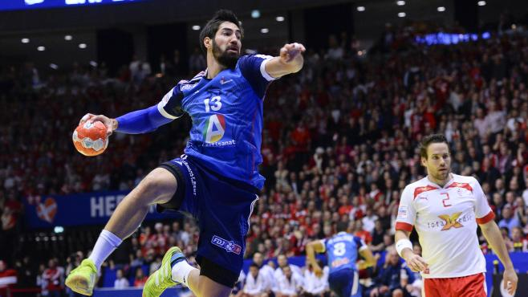

Site name
Si t'as pas d'amis,
fais du curling !
Le curling est un sport de précision pratiqué sur la glace avec des pierres en granite,
taillées et polies selon un gabarit international.
Le but est de placer les pierres le plus près possible d'une cible circulaire dessinée sur la glace,
appelée la maison.
Il est généralement admis que ce jeu a été inventé au XVIe siècle en Écosse,
Le jeu du curling en extérieur était très populaire en Écosse entre les XVIe et XIXe siècles
lorsque le climat hivernal était suffisamment froid pour assurer de bonnes conditions de glace.
Le curling est probablement l’un des plus vieux sports d’équipe au monde.
Farid Benmimoune
Source : wikipedia.org, ffsg.org lien
Nicolas A.
PARIS EST MAGIQUE ! Le PSG tient son exploit de la saison ! L'équipe se qualifie pour les quarts de finale de la Ligue des champions en éliminant son adversaire Chelsea dans un match incroyable. Contraints de jouer à 10 contre 11 à la demi-heure de jeu après l'expulsion de leur joueur Zlatan Ibrahimovic et menés deux fois au score, les joueurs du Paris Saint Germain ont quand même décroché leur billet pour les quarts de finale après 120 minutes de folie. Il y a un an, Chelsea avait sorti les hommes de Laurent Blanc en quart de finale ,battu s sur le score de 1 à 3 au Parc des Princes, les Anglais s'étaient finalement imposés 2-0 à Stamdford Bridge.Les principaux acteurs n'ont pas changé,à l'exception de David Luiz qui évolue désormais sous les couleurs du PSG aux côtés de son ami d'enfance et coéquipier en sélection brésilienne Thiago Silva. Thiago Silva, après une coupe du monde catastrophique, n'était plus à son meilleur niveau, lui qui était pourtant vu comme le meilleur défenseur du monde et aurait dû former depuis le début de la saison certainement la meilleure charnière défensive d'Europe. Mais depuis peu, Silva redevient progressivement l'homme fort du PSG. Le PSG qui concède malheureusement un penalty transformé par Hazard à la 96ème minute après une main dans la surface de Thiago Silva. Celle-ci aurait pu coûter cher au PSG, mais à la 114ème minute, celui qui a concédé le penalty marque sur une magnifique tête après un corner tiré par Thiago Motta. Mais cet exploit aurait été vain si l'ancien Blues, David Luiz, n'avait pas égalisé lui aussi sur un but de la tête après un corner, cinq minutes après l'ouverture du défenseur anglais Gary Cahill à la 81ème minute.
Source : blabla
Nicolas M. le bon
On peut demander à des milliers de Français, mais il y a peu de chances qu’on trouve quelqu’un qui sait ce qu’est le Fistball. Cet article a pour but de vous informer sur ce beau sport qui est – à tort – en train de disparaître. Il est aussi appelé “balle au poing” (à ne pas confondre avec “ballon au poing” qui se joue surtout en Picardie). Le Fistball est un sport d’équipe joué partout dans le monde, mais surtout dans les pays germanophones et dans les pays avec une histoire d’immigration allemande.d’immigration allemande.d’immigration.
Source : blabla
Handball - Un cinquième titre pour la France ?
 Après avoir obtenu le titre de champion en 1995, 2001, 2009 et 2011, les bleus sont prêts à décrocher leur cinquième titre de champion du monde face au Qatar ! Malgré la défaite face à la Suède, l’équipe de France est classée première du groupe C, grâce à une série de victoires face aux autres équipes de ce même groupe. Cette première place leur a permis d’atteindre la huitième de finale face à l’Argentine, une victoire (33 - 20) qui nous amène en demi-finale face à l’Espagne. Malgré un match aux allures d’un combat, la France en sort victorieuse (26 - 22), ce qui lui permet d’atteindre la finale. La finale face à une équipe que personne ne soupçonnait arriver jusqu’à cette étape, le Qatar. Ce match aura lieu ce dimanche 1er février à 17h15. Une date qui va peut-être leur permettre l’exploit. Une victoire aux allures de rêves Si la France réussit à atteindre la coupe, elle sera la première équipe de l’histoire à réaliser un quintuplé, cette 5eme victoire en 2015 au Qatar succéderait aux victoires précédentes en 1995 en Islande, 2001 en France, 2009 en Croatie et en 2011 en Suède. L’équipe de France réaliserait un triplé, champion olympique, champion d’Europe et champion du monde en titre, permettant ainsi d’être qualifiée pour les Jeux Olympiques au Brésil en 2016. Un gardien exceptionnel ? Thierry Omeyer, le gardien de l’équipe de France est décrit par tout le monde comme «le meilleur gardien actuel» et même par «le meilleur gardien de tous les temps». «Vous avez besoin d’être fort dans votre tête car vous encaissez beaucoup de buts», dans ces paroles, T. Omeyer décrit la force mentale requise par la fonction de gardien. Il ajoute que sa fonction est un pilier de l’équipe et qu'un gros poids pèse sur lui, «vous pouvez aider votre équipe à gagner, mais quand vous jouez mal, votre équipe perd». Malgré son âge (38 ans), Omeyer est le centre de l’équipe de France et reste le meilleur gardien d’après l’opinion générale.
Source : blabla
pierre baladi

La derive du sport En leur temps déjà, Roland Barthes, Herbert Marcuse et les théoriciens de l’école de Francfort avaient s dévoiler les effets de l’aliénation, décrire les dérivatifs ludiques où « les gens sont invités à investir leurs aspirations refoulées » et montrer que « le capitalisme réussissait à dépersonnaliser l’homme en lui offrant mille et une occasions d’identification gratifiante ». A la fin des années 60, une poignée d’intellectuels commençait l’étude scientifique de l’institution sportive, arme essentielle dans l’embrigadement et le corporatisme généralisés. Les forces sociales favorables au maintien de l’ordre établi ont su mettre sur le marché de véritables exutoires aux peurs et aux angoisses ; le sport est le plus puissant d’entre eux. Comme les autres aliénations, l’aliénation sportive n’est pas vécue comme telle par ceux qui la subissent, mais, plus que les autres, elle inclut le plaisir et la jouissance. Le sport est populaire, ce qui le rend intouchable. On n’hésite pas à voir en lui un facteur d’émancipation sociale et culturelle, oubliant un peu vite les intérêts économiques (le marché sportif) et idéologiques (l’intégration de tous à un mode de vie et à des pratiques corporelles normalisés) qui président à sa diffusion massive. Astreinte aux lois du marché, l’institution sportive véhicule également les préjugés les plus éculés, aux relents nauséabonds : obsession de la décadence, appel à la régénération morale, viol et mépris des foules, goût pour le décorum et les parades militarisées, apologie de la souffrance et de la lutte pour la vie, culte des chefs, exacerbation de l’individualisme et du mérite personnel, sexisme, anti-intellectualisme. Univers d’évasion, de diversion sociale, moyen de « chloroformisation des consciences » (Hans-Magnus Enzenberger), le sport reste une arme essentielle du conditionnement social.
Source : monde diplomatique
Antoine : la castagne de Zizou
Le coup de tête de Zidane est un incident qui s'est déroulé le 9 juillet 2006, lors de la finale de la coupe du monde de football à Berlin, opposant la France à l'Italie. Zinédine Zidane, capitaine de l'équipe de France et disputant son dernier match en tant que professionnel, assène lors des prolongations (alors que les deux équipes sont à égalité 1-1) un coup de tête au thorax d'un joueur de l'équipe adverse, Marco Materazzi, après que ce dernier lui a tenu des propos injurieux. D'abord passée inaperçue aux yeux de l'arbitre, la faute de Zidane lui vaut une expulsion sur carton rouge à la 110e minute de la rencontre, lorsqu'elle est signalée. La France continue à dix et perd cette finale aux tirs au but. La teneur des propos du joueur italien a alimenté de nombreuses spéculations par différents journaux tels que la BBC, The Guardian, The Sun selon lesquels Materazzi aurait traité Zidane de « fils de putain terroriste », ce que Materazzi a nié en bloc1. Ce n'est qu'un an après les faits que Marco Materazzi lui-même a livré sa propre version des propos échangés. Zidane lui ayant dit : « Si tu veux vraiment mon maillot, je te le donne après le match » (Materazzi tirait sur son maillot), Materazzi lui répondit : « Je préfère ta putain de sœur ». Médiatisé, ce coup de tête a donné lieu a de nombreuses interrogations en France sur les motifs de l'acte. Une enquête a été entamée par la Fédération internationale de football association (FIFA) sur ce sujet. La médiatisation a aussi donné lieu à de nombreuses parodies, et le geste de Zidane a été l'objet d'une sculpture de bronze d'Adel Abdessemed exposée à Beaubourg en 2012.